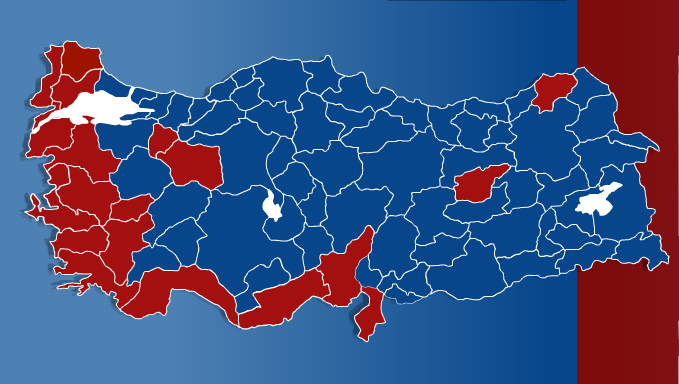
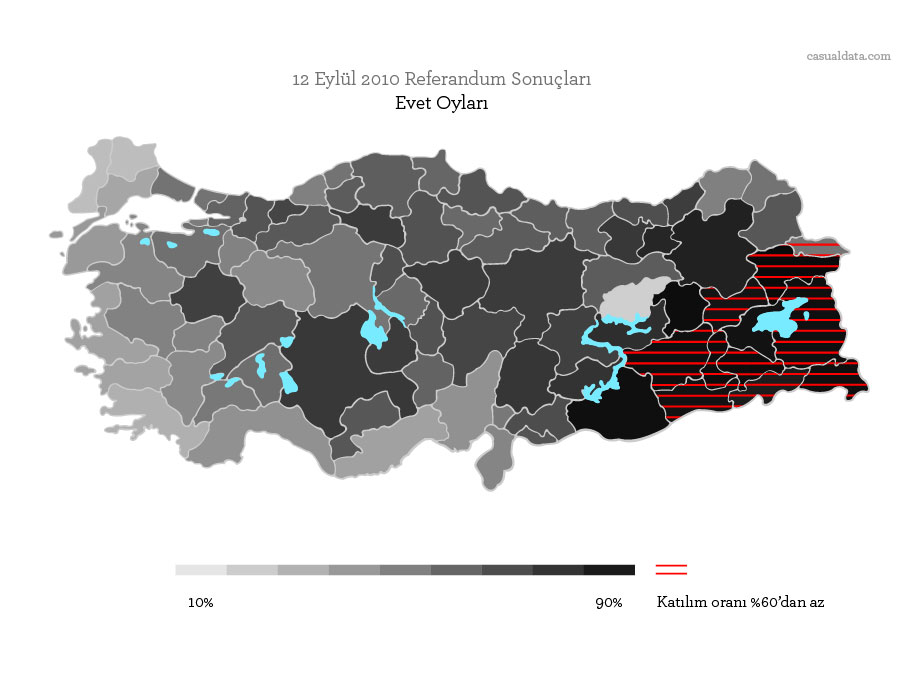
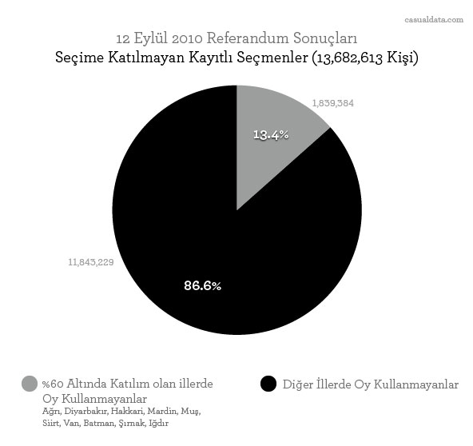
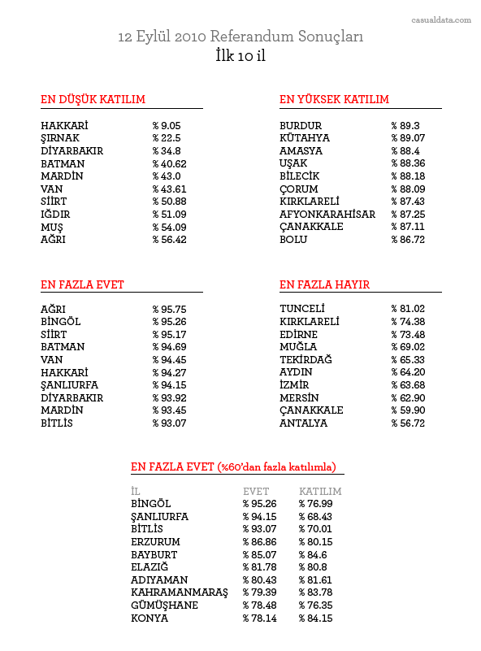

Harita ve Rakamlar
12 Eylül 2010 Referandum Sonuçları
Mahir Yavuz, 17/09/2010
Brief explanation for international visitors: This page contains a short article about the 2010 Referendum results in Turkey. It highlights the lack of good infographics, maps and charts in Turkish Media about the results.
Türkiye'de yaşayan ve Türkiye üzerine çalışan bir çok kişi gibi ben de referandum sonuçlarına dair olan haberleri ve yorumları takip ediyorum. Referandum sonuçlarının getirdiği siyasi ve sosyal mesajların okumasında gazeteciler, yorumcular ve halk sonuçların görüntülendiği rakamlara ve/veya haritalara referans veriyor.
Bilgi görselleştirmesinin önemli bir gazetecilik aracı haline geldiği bu dönemde yazılı ve görsel basında yer alan bu haritaların hemen hemen hepsi birbirine benzer şekilde. Bu benzer haritalar üzerinden ilerleyen tartışmalar da bazı noktalarda isabetsiz çıkarımlara sebep oluyor.
Referandum; kurallar gereği, katılım ve iki farklı seçimden oluşan basit bir çoğulcu oylama yöntemi. Yerel yönetim ya da genel milletvekili seçimlerinde olduğu gibi çeşitli coğrafi hesaplamalar söz konusu degil. Toplamda katılımın yeterli olması ve ülke genelinde alınan oyların bir taraf lehine %50 yi aşması yeterli. Oysa ki sonuçlara dair gördüğümüz haritalar çoğunlukla iller bazında ve mavi(EVET)/kırmızı(HAYIR) renklere boyanmış durumdalar. Örnek: NTV Referandum Haritası.

Kaynak: http://referandum.ntvmsnbc.com
Farklı bölgelerin tercihlerini anlamak açısından iller bazında bir görselleştirme yapılması tuhaf değil fakat %51 ve %96 oranında EVET oyu çıkmış iki farklı ilin ayni renkte gösterilmesi bizi farklı sonuçlar çıkarmaya yöneltebilir. Nitekim birçok yorumcu bu haritalara bakarak 'Sahiller meselesi', 'Üçe bölünmüş Türkiye', 'Özerk Trakya' vb. spekülatif tanımlar üretmiş durumda. Oysa ki verilen EVET oylarının oranını herhangi bir renklendirmeye tabi tutmadan gri skala üzerinden Türkiye Haritası'na yansıttığımızda sonuçlar asağıdaki gibi oluyor.

Bu harita mavi/kırmızı haritalardan daha farklı durumları da bize gösteriyor. İç Anadolu, Karadeniz ve iç Ege'nin bazı illerinde evet oranının çok da yüksek olmadığını ayrıca boykotun etkisi dışında kalan bazı illerde de hayli yüksek oranda EVET oyu çıktığını görebiliyoruz. Ve sanırım en önemlisi mavi/kırmızı gibi keskin çizgilerle ayrılmış değil, daha yumuşak geçişe sahip bir panorama mevcut.
Bir diğer popüler konu ise seçimlere katılım oranı, özellikle doğu ve güneydoğu illerinde etkisini gösteren boykot çağrısı idi. Heryerde 58 ve 42 rakamlarında bahsediliyor, boykotun etkisi hakkında spekülatif tahminlerde bulunuluyor. Bu konuda da çok sağlıklı grafikler göremediğimiz için öncelikle seçmenlerin oy dağılımını daha sonra da boykot etkisindeki illerin genel katılımsızlara olan oranını gösteren iki farklı grafik hazırladım.

Bu grafiklerden okunabilecek en önemli veri boykota uyarak ya da kişisel tercihiyle oy kullanmayan seçmenin HAYIR oyu verenlere yakın olması (%4.15 daha az). Sonuçları tamamen değiştirebilecek sayıda seçmenin (14 milyona yakın) referandumda oy kullanmadığını görünüyor. Yaklaşık iki milyon seçmenin boykotun aktif olduğu bölgelerde seçime katılmadığını; ancak bunun genel seçime katılmayanların sadece %13.4'ünü oluşturduğunu da görüyoruz. Katılımın yüksek olduğu yerlerde seçmenin kişisel tercihle mi yoksa boykot sebebiyle mi oy kullanmadığını anlamamız ise zor.
{Güncelleme: 18/09/2010} Gelen yorumlar ve tavsiyeler üzerine boykotun aktifliği üzerine yeniden düşündüm. Temel olarak vardığım nokta bütün hesaplamaların yanıltıcı olacağı. Ancak, birebir bir karşılaştırma olmasa bile bir önceki seçimdeki katılım oranları bize yardımcı olabilir. 2009 yerel seçimleri ve 2010 referandumu seçmen sayısı arasında büyük bir fark var ama yine de seçmen eğiliminin benzer olduğunu varsayarsak; 2009'da seçime katılmayan seçmen oranı %15, 2010'da ise ciddi bir artış ile %26,29. Bu durumda aradaki %11.29'un büyük bir kısmının boykotçu olduğunu varsayabiliriz. Kayıt sorunu yaşayan veya diğer kişisel sebeplerle oy kullanmayan seçmenleri düşersek boykotçu olarak sandığa gitmeyenlerin oranı tahminimce %9-11 arasında. Bu da 4,6 — 5,7 milyon sayıda seçmene denk geliyor.

Son olarak hazırladığım ise tahmin edilen ama yine çok derli toplu bir şekilde bulamadığım katılım, EVET/HAYIR oranları ve iller ile ilgili bir tablo. Katılımın az olduğu illerde beklendigi gibi EVET oylarının da yaygın olduğunu görüyoruz. Fakat Bingöl, Şanlıurfa, Bitlis, Bayburt gibi illerde katılım normal olmasına rağmen çok ciddi bir EVET yoğunluğu mevcut. Bu kadar homojen HAYIR oylarına sahip çok sayıda il yok. Hatta en fazla HAYIR oyu çıkan 10. il Antalya'da HAYIR oranı sadece %56.72.
Bu analizlerin sonucunda karşımıza araştırılması gereken bir kaç soru çıkıyor:
- Görsel Medya kullandığı grafiklerin manipülatif olmaması için yeterince çaba harcıyor mu? Aynı veri tablosunu bir kaç farklı yönüyle gösterip bizlere daha sağlıklı bilgiler sunabilir mi?
- YSK bize daha detaylı bir veritabanı sağlar ise detaylı görselleştirmeler ile daha verimli analizlere ulaşabilir miyiz?
- Referandum'da katılımın yüksek olduğu bölgelerde oldukça fazla çıkan EVET oylarının sebebi nedir? Bkz: Erzurum, Bayburt, vb.
- Referandum'da boykotun gerçek gücü hesaplanabilir mi? Katılımın yüksek olduğu yerlerde oy kullanmayanların boykotçulara oranı hesaplanabilir mi?
- Bu kadar çok sayıda oy kullanmayan seçmen olmasının sebepleri nelerdir? Sayısal oy verme işlemi katılımı arttırabilir mi?
Konu tartışılmakta olduğu için bu sayfa da yeni detaylar oluştuğu takdirde güncellenecektir.
1. Güncelleme: 18/09/2010

2010 casualdata.com. Bu sitede yer alan yazı ve grafikler herhangi siyasi bir parti veya kurumdan bağımsız olarak, tamamen kişisel kullanım için üretilmiştir. Kaynak: Yüksek Seçim Kurulu Websitesi